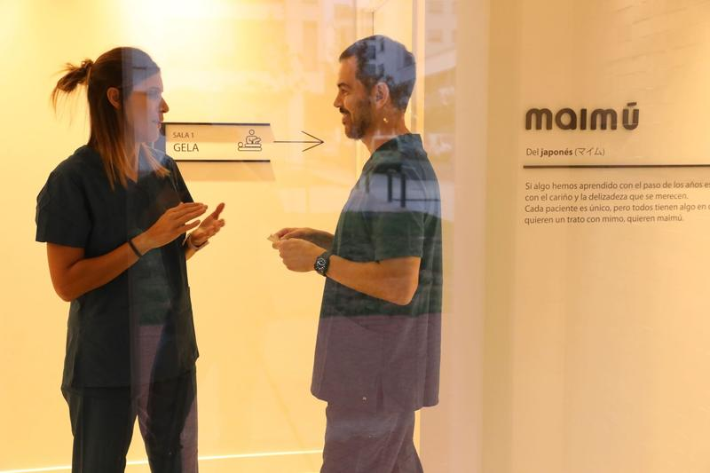
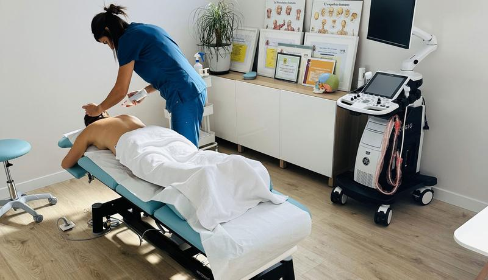
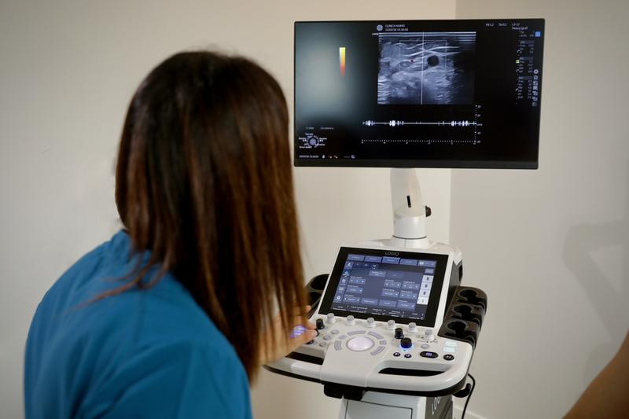
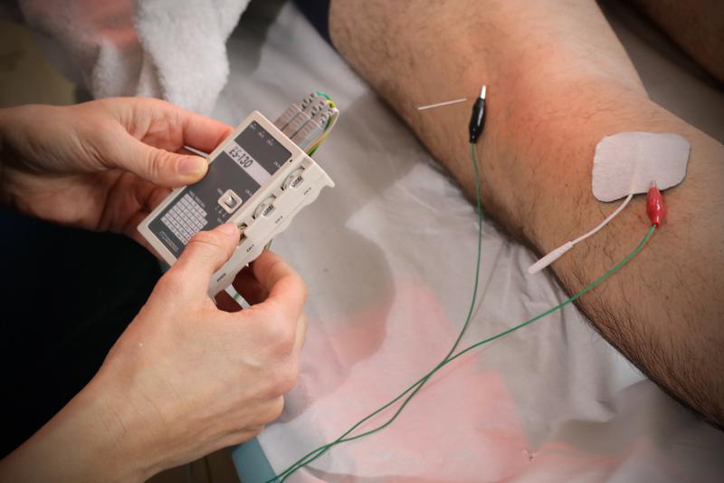
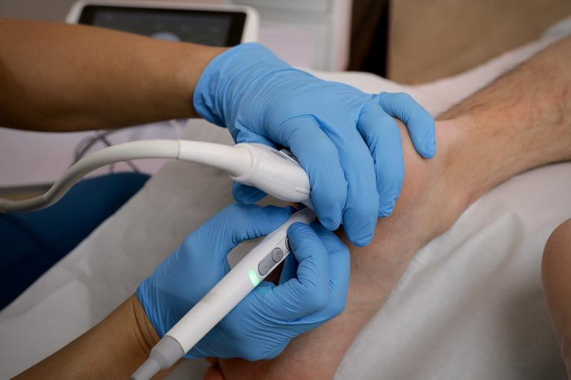
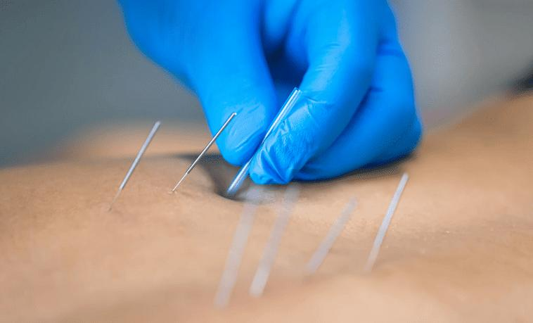
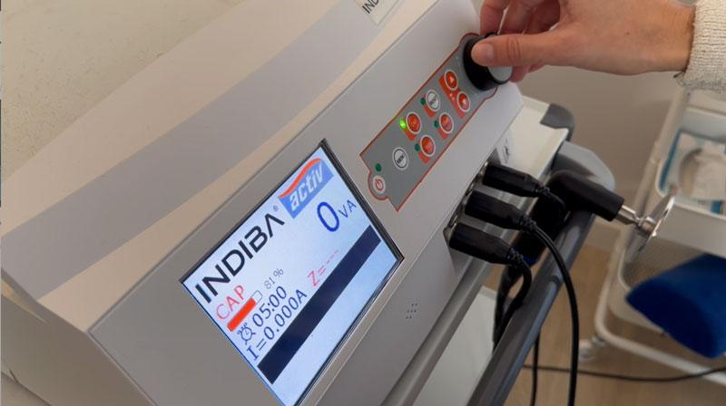
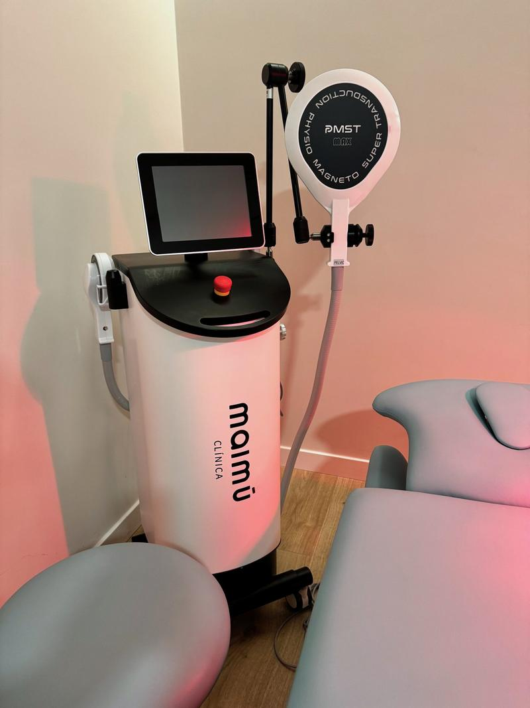
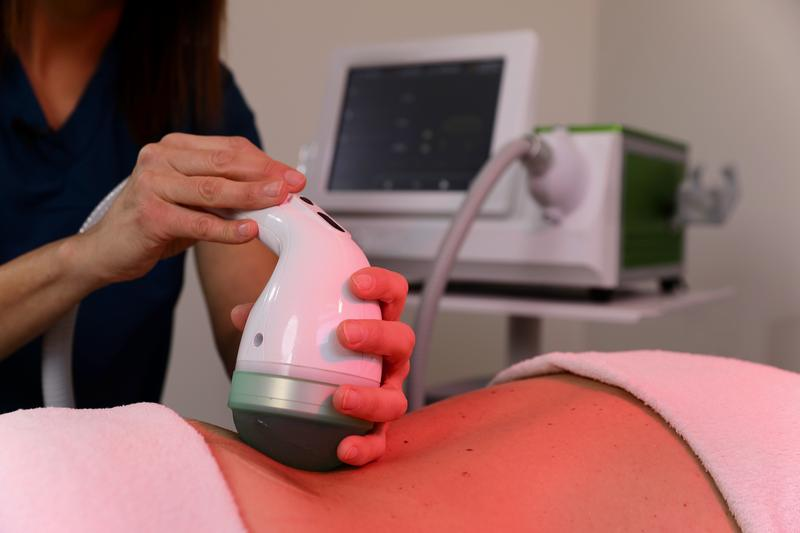
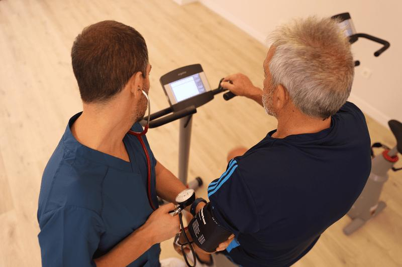

Fisioterapia aurreratua Vitoria‑Gasteizen
Mimoz. Ekografiaz gidatutako fisioterapia, osteopatia eta berregokitzea Salburuan, adin guztietarako.
Ordutegia
Astelehenetik ostiralera
9:00etatik 21:00etara
Estrasburgo pasealekua 15, behea · Salburua, Vitoria-Gasteiz
Tratamenduak
Ekografiaz gidatutako fisioterapia aurreratua, elkargokide diren fisioterapeuta eta osteopatekin. Sakatu tratamendu bat zertan datzan ikusteko.
Denok artatzen ditugu: haurrengandik adinekoetaraino, gizonak eta emakumeak, kirolariak eta lesio baten ondoren berriro mugitzen hasten direnak.

Eskuzko terapia
Gure tratamenduen oinarria: fisioterapeutaren eskuak, giharrak, artikulazioak eta ehun bigunak ebaluatu eta tratatzeko.
Gehiago jakin
Osteopatia
Gorputzaren ikuspegi orokorra, ondoezen jatorria tratatzeko, ez sintomak bakarrik.
Gehiago jakin
Muskulu-eskeletoko ekografia
Giharrak, tendoiak eta lotailuak denbora errealean ikusten ditugu, arazoa non dagoen jakin eta zehaztasunez tratatzeko.
Gehiago jakin
Neuromodulazioa
Intentsitate txikiko estimulu elektrikoak, ekografiaz gidatuak, mina tratatzeko eta funtzio neuromuskularra hobetzeko.
Gehiago jakin
Elektrolisi perkutaneo intratisularra (EPTE)
Gihar eta tendoietako lesio kronikoetarako, orbainetarako eta kaltzifikazioetarako.
Gehiago jakin
Puntzio lehorra
Orratz finak, botikarik gabe, puntu abiarazleetan: gihar-mina arintzen eta mugimendua hobetzen laguntzen du.
Gehiago jakin
Indiba
Ehunen birsorkuntza estimulatzen duen irrati-maiztasuna: mina eta hantura murrizten ditu eta zirkulazioa hobetzen du.
Gehiago jakin
Eremu magnetiko superinduktiboak
Azken belaunaldiko teknologia ez-inbaditzailea, giharrak eta nerbioak modu kontrolatuan estimulatzen dituena.
Gehiago jakin
Talka-uhin fokalak
Energia handiko uhin akustikoak tendoi eta ehunetako arazoetarako, baita kaltzifikazio batzuetarako ere.
Gehiago jakin
Kirol-fisioterapia eta berregokitzea
Kirol-lesioak prebenitu, tratatu eta sendatu, eta berriro errendimendua lortu.
Gehiago jakin
Masailezurreko mina eta disfuntzioa
Aurpegiko eta masailezurreko minean eta artikulazio tenporomandibularreko arazoetan espezializatutako unitatea.
Gehiago jakinPotentzia handiko laserra (HILT)
Argi-energia mina arintzeko, errekuperazioa errazteko eta funtzionaltasuna hobetzeko. Ez-inbaditzailea.
Gehiago jakin
Bihotz-errehabilitazioa
III. fasea edo mantentze-fasea, saio bakoitzean gainbegiratua eta monitorizatua.
Gehiago jakinNola lan egiten dugun
Paziente bakoitzak bide argi bat egiten du, iristen denetik berriro askatasunez mugitzen den arte.
Esplorazioa eta denbora errealeko ekografia, minaren jatorria aurkitzeko.
Eskuzko terapia, ekografiaz gidatutako fisioterapia eta fisioterapia inbaditzailea, osteopatia eta teknologia (Indiba, talka-uhinak, eremu magnetikoak).
Ariketa terapeutikoa, indarra eta pilates, zuretzat egokituak.
Jarraipena eta klaseak, lesioa itzul ez dadin.
Prozesu osoan zehar zure bilakaera ekografiaz berrikusten dugu eta tratamendua egokitzen dugu.
Gure filosofia
Gure eginkizuna kalitate goreneko fisioterapia eskaintzea da, ebidentzia zientifiko berrienean oinarritua eta gure arloan aplikatutako berrikuntzak eta azken teknologiek babestua. Ezagutza, esperientzia eta teknologia uztartzen ditugu, tratamendu eraginkorrak, seguruak eta pertsona bakoitzari egokituak eskaintzeko.
Arreta hurbil, zintzo eta gardenean sinesten dugu, paziente bakoitza protagonista izan dadin. Horregatik, tratamendu pertsonalizatuen, hitzordu azkarren eta itxaron-denbora laburren alde egiten dugu, zure denbora eta beharrak beti errespetatuz.
Gure konpromisoa da lehen egunetik entzuna, lagundua eta esku onetan sentitzea, merezi duzun konfiantza eta profesionaltasuna eskainiz.
Clínica Maimú: zientzia, berrikuntza eta hurbiltasuna zure osasunaren zerbitzura.
Klase gidatuak
Tratamendurik onena prebentzioa da. Plaza mugatuak: erreserbatu WhatsAppez edo 662 603 624 zenbakira deituta.
- Indar funtzionaleko entrenamenduaProfesionalek gidatua: metabolismoa erregulatzen laguntzen du, giharrak eta hezurrak indartzen ditu eta bihotz-hodietako osasuna hobetzen du.
- PilatesCore-a indartzen du, malgutasuna, jarrera eta oreka hobetzen ditu eta estresa murrizten laguntzen du. Maila desberdinetarako klaseak.
- Pilates haurdunentzatHaurdunaldira egokitutako pilatesa. Astelehen eta asteazkenetan, 11:00etatik 12:00etara.
- Bihotz-errehabilitazioa, III. faseaMantentze-saio gainbegiratuak, tentsioa eta bihotz-maiztasuna monitorizatuta.
- Gorputz-kontzientziaBanakako klaseak, indar-entrenamenduko taldeetan sartu aurretik, oinarri onarekin hasteko.

| Astelehena | Asteartea | Asteazkena | Osteguna | Ostirala | |
|---|---|---|---|---|---|
| 08:00–09:00 | Indar entren. | Indar entren. | |||
| 09:00–10:00 | Pilates | Indar entren. | Pilates | Indar entren. | |
| 09:30–10:30 | Bihotz-errehab. | ||||
| 10:00–11:00 | Bihotz-errehab. | Indar entren. | Bihotz-errehab. | Indar entren. | |
| 11:00–12:00 | Pilates haurdunak | Pilates haurdunak | |||
| 16:00–17:00 | Indar entren. | Indar entren. | Indar entren. | Indar entren. | |
| 17:00–18:00 | Pilates | Indar entren. | Pilates | Indar entren. | Indar entren. |
| 18:00–19:00 | Indar entren. | Indar entren. | Indar entren. | Indar entren. | |
| 19:00–20:00 | Pilates | Pilates | Pilates | Pilates | |
| 20:00–21:00 | Indar entren. | Indar entren. |
Astelehena
- 08:00–09:00Indar entren.
- 09:00–10:00Pilates
- 10:00–11:00Bihotz-errehab.
- 11:00–12:00Pilates haurdunak
- 16:00–17:00Indar entren.
- 17:00–18:00Pilates
- 18:00–19:00Indar entren.
- 19:00–20:00Pilates
- 20:00–21:00Indar entren.
Asteartea
- 09:00–10:00Indar entren.
- 10:00–11:00Indar entren.
- 16:00–17:00Indar entren.
- 17:00–18:00Indar entren.
- 18:00–19:00Indar entren.
- 19:00–20:00Pilates
Asteazkena
- 08:00–09:00Indar entren.
- 09:00–10:00Pilates
- 10:00–11:00Bihotz-errehab.
- 11:00–12:00Pilates haurdunak
- 16:00–17:00Indar entren.
- 17:00–18:00Pilates
- 18:00–19:00Indar entren.
- 19:00–20:00Pilates
- 20:00–21:00Indar entren.
Osteguna
- 09:00–10:00Indar entren.
- 10:00–11:00Indar entren.
- 16:00–17:00Indar entren.
- 17:00–18:00Indar entren.
- 18:00–19:00Indar entren.
- 19:00–20:00Pilates
Ostirala
- 09:30–10:30Bihotz-errehab.
- 17:00–18:00Indar entren.
Taldea
Elkargokide diren fisioterapeuta eta osteopatak, unibertsitate-ikasketekin, graduondokoekin eta etengabeko prestakuntzarekin.
Instalazioak


Harremana
HelbideaEstrasburgo pasealekua 15, behea, 01002 Vitoria-Gasteiz (Salburua)
Telefonoa eta WhatsAppa662 603 624
Posta elektronikoainfo@clinicamaimu.com
OrdutegiaAstelehenetik ostiralera, 9:00etatik 21:00etara
Hitzordua eskatu WhatsAppez